The matmuls and nonlinearities do the math, but a two-symbol word decides what runs next. One production rule per sub-operation, 16 steps for the tiny model, 315 for Qwen 2.5-0.5B.
[OP, STATE]. Each production replaces it with one new pair.
A classic 2-tag system reads the leftmost symbol, appends a production, and deletes two symbols. In the implementation here, the transformer controller still follows that shape, but every production emits exactly one new pair: a next operation symbol and a mutated state carrier.
That fixed-length form is the whole trick. The word never grows, so the controller is easy to execute, inspect, and profile. The heavy work still happens inside the production rule itself: RMSNorm, attention, feed-forward matmuls, and the LM head.

[OP, STATE] pair. This is the fixed-length equivalent of append-then-delete with deletion number 2.
Take the fused QKV projection in layer l. In symbolic form, one production rule looks like this:
before: [QKV_MATMUL_l, STATE(x = x_norm, layer = l)]
rule: qkv = x_norm @ W_qkv^(l)
after: [BIAS_ADD_l, STATE(x = qkv, layer = l)]
The implementation in eml_tag.c literally follows that structure: produce_qkv_matmul() computes the projection and sets the next op to TAG_BIAS_ADD.
Read the current operation symbol, dispatch the matching production rule, then replace the current head with the next operation symbol.
Inside that rule, the state is mutated in place. Matmuls may call optimized kernels, but the tag system decides the order, not the hardware backend.
The one-layer tiny model is the clearest visualization because it completes in 16 steps. The first 14 are the layer pipeline, then the controller falls through to FINAL_NORM and LM_HEAD, and the next head symbol becomes HALT.

RMSNORM_ATTN_0.RMSNORM_ATTN → QKV_MATMUL → BIAS_ADD → ROPE → KV_STORE → ATTENTION → OUT_PROJ → RESIDUAL_ATTN.FFN_NORM → GATE_UP → SILU_MUL → DOWN_PROJ → RESIDUAL_FFN.RESIDUAL_FFN: either jump to the next layer’s RMSNORM_ATTN or, on the last layer, jump to FINAL_NORM.HALT.The controller executes exactly one embedding step, 13 layer-local steps per transformer layer, then two terminal steps:
What repeats is not the whole graph, only the operation word. The same production rule shapes recur with different layer indices and different weight tensors.
The state carrier is not just a placeholder. It holds the mutable payload needed to continue the token pass:
x
KV cache updates happen as side effects of rules like KV_STORE, but the controller still only needs the same two-symbol word to decide the next step.
For this controller, SVG is the right visualization format. The interesting part is symbolic structure: named ops, arrows, and loop boundaries. SVG keeps that crisp at any scale and lets the page animate the progression without a heavy binary asset.
If you want a more runtime-oriented visualization later, the next useful artifact would be a generated trace from the actual interpreter, rendered into a timeline or a frame-by-frame GIF. But for explaining the model, SVG is the cleaner first post.